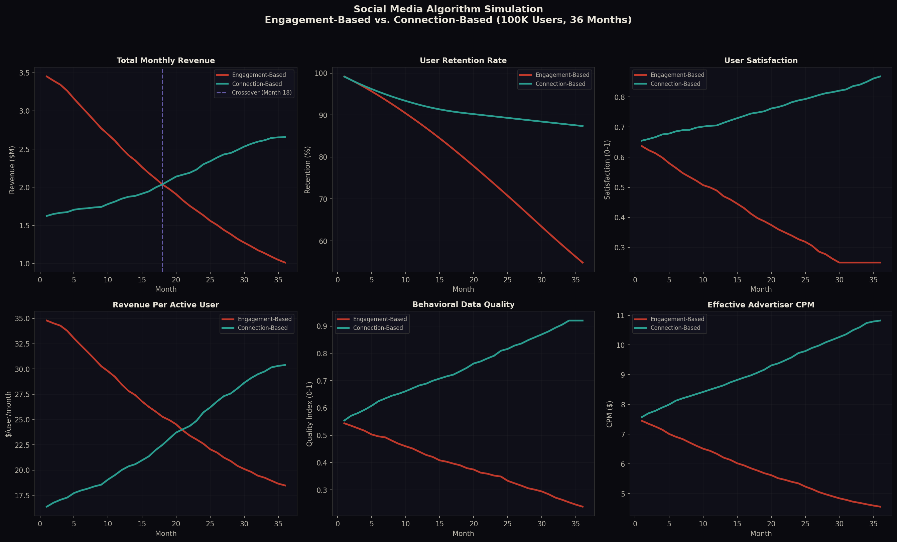
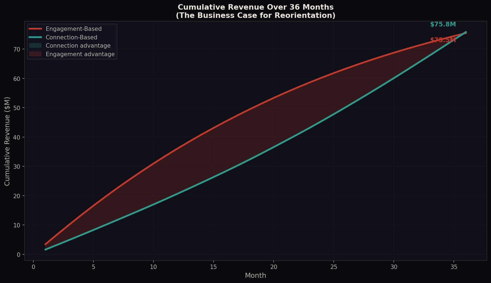

The Backwards Problem — Article Series
Article 3 of 9
Burning the House for Kindling
Social media platforms are not evil. They are backwards. They built their entire optimization stack from the surface inward, and the error has been compounding for fifteen years. Here is the math.
There is a specific phrase that describes what social media platforms have been doing to themselves. They are burning the house for kindling. They are taking the most structurally valuable thing they have, genuine human connection at scale, and feeding it into an optimization engine that converts it into a surface metric. Then they use that surface metric to destroy the thing it came from.
This is not a moral argument. It is a structural one. The platforms are not malicious. They are misoriented. And the misorientation has a precise mathematical description, a specific mechanism of failure, and a testable correction. This article covers all three.
What the Algorithm Actually Does
To understand the problem, you need to understand what the algorithm is actually optimizing for. Not what the platforms say it is optimizing for. What it actually does.
Every major social media platform uses a variant of the same basic ranking function. Content is scored on a combination of predicted engagement signals: clicks, likes, shares, comments, watch time, reactions. The content with the highest predicted engagement score gets shown to the most people. The content with the lowest predicted engagement score gets buried.
This seems reasonable. If users engage more with certain content, it must be content they want. The algorithm is just finding what people want and giving them more of it. The problem is that this reasoning confuses a surface signal for a deep structure. Engagement is not a measure of what users want. It is a measure of what triggers a reaction. These are not the same thing, and the difference between them is where the entire failure of the social media ecosystem lives.
A 2021 study by Smitha Milli et al., published in PNAS Nexus, found that engagement-optimized algorithms systematically make users worse off on their own stated preferences. Users report wanting content that informs them, connects them to people they care about, and helps them make better decisions. The algorithm gives them content that triggers emotional reactions, because emotional reactions generate clicks. The gap between what users say they want and what the algorithm delivers is not a bug. It is a structural consequence of optimizing for the wrong variable.
Germano et al. (2019) formalized this in a model showing that engagement amplification is not a byproduct of the algorithm but its core mechanism. The algorithm does not accidentally promote outrage. It is designed, at a structural level, to do exactly that, because outrage is the most reliable predictor of engagement, and engagement is what the algorithm is told to maximize.
The algorithm is not finding what people want. It is finding what triggers a reaction. These are not the same thing. The entire failure of the social media ecosystem lives in that gap.
The Error Feedback Loop
The Backwards Problem, as described in Article 1, is what happens when you analyze a complex system from the surface inward. In the social media context, the surface is the engagement metric. The deep structure is genuine human connection. Optimizing from the surface inward creates a specific, compounding feedback loop:
- The algorithm promotes outrage content because it generates high engagement scores. Emotionally charged, divisive, or sensational content consistently outperforms informative, nuanced, or connective content on every engagement metric the algorithm tracks.
- User satisfaction erodes because the content does not serve genuine needs. Users spend more time on the platform but report feeling worse after using it. They are not getting what they came for. They are getting what triggers a reaction.
- Users leave or disengage over time. Retention drops. The users who stay are disproportionately those who are most susceptible to outrage-driven engagement, which further skews the training data the algorithm learns from.
- Behavioral data quality degrades because the remaining users are reactive rather than intentional. A user who clicks on something because it made them angry is not expressing a preference. They are expressing a reaction. That is a fundamentally different signal, and it is low-quality data for any advertiser trying to understand what people actually want.
- Ad targeting performance falls because the underlying behavioral data is garbage. Advertisers pay for access to users who are in a buying mindset. Outrage-driven platforms deliver users who are in a reactive mindset. The CPM that advertisers are willing to pay reflects this difference directly.
- Revenue per user declines as the combination of lower retention, lower data quality, and lower CPM compounds. The platform is now generating less revenue from fewer users with worse data than it would have if it had optimized for the deep structure from the beginning.
Each step in this loop is a direct consequence of the previous one. The algorithm is not making a series of independent mistakes. It is making one structural mistake, optimizing from the surface inward, and the error is compounding with every iteration of the feedback loop. This is the Backwards Problem in its most consequential real-world form.
The Revenue Paradox
The most counterintuitive aspect of this analysis is that the engagement-based algorithm is not even good for the platform's own revenue. The conventional wisdom is that platforms promote outrage because it makes them money. The data suggests the opposite: they are destroying their own revenue model in the process.
There are four specific mechanisms through which engagement-based optimization destroys platform revenue over time:
Advertiser flight and brand safety. Major advertisers have pulled spending from platforms where their ads appear next to inflammatory content. This is not a small or temporary effect. The brand safety problem is a direct consequence of the algorithm's structural preference for outrage content, and it affects the highest-value advertising inventory on the platform.
User attrition and lifetime value destruction. A user who leaves the platform after two years of declining satisfaction is worth far less than a user who stays engaged for ten years because the platform genuinely serves their needs. The engagement-based algorithm optimizes for short-term session length at the cost of long-term user lifetime value. This is the classic Backwards Problem trade: surface metric up, deep structure down, long-term outcome worse.
Data quality degradation. This is the most underappreciated mechanism. The behavioral data that platforms sell to advertisers is only valuable if it reflects genuine user preferences. Outrage-driven interactions produce low-quality behavioral signals. A user who clicks on inflammatory content is not revealing a preference that advertisers can use. The platform is degrading the quality of its core product by optimizing for the metric that generates the most of it rather than the metric that makes it most valuable.
Regulatory and reputational cost. The social harms generated by engagement-optimized algorithms have attracted regulatory attention in multiple jurisdictions. The cost of compliance, litigation, and reputational damage is a direct financial consequence of the structural misorientation. These costs are not priced into the short-term engagement numbers that drive the algorithm's optimization target.
The Simulation
To make this argument precise rather than qualitative, we built a computational model comparing two algorithmic strategies over a 36-month period with a 100,000-user cohort. The model is intentionally conservative in its assumptions about the connection-based algorithm's advantages. The parameters were set to give the engagement-based algorithm every reasonable benefit of the doubt.
Engagement-Based (current industry standard): Optimizes for clicks, reactions, shares, and watch time. Promotes emotionally charged content because it generates the highest surface-level interaction scores.
Connection-Based (proposed reorientation): Optimizes for reciprocal interaction, trust formation, conversation depth, and cross-group positive engagement. Applies the Interaction Field framework by orienting toward deep structure rather than surface metrics. Starts with lower engagement scores because genuine connection is less immediately stimulating than outrage.
| Metric | Month 1 | Month 18 (Eng.) | Month 18 (Conn.) | Month 36 (Eng.) | Month 36 (Conn.) |
|---|---|---|---|---|---|
| Monthly Revenue | $3.45M / $1.62M | $2.18M | $2.19M | $1.01M | $2.66M |
| User Retention | 100% | 77% | 94% | 55% | 87% |
| User Satisfaction | 0.65 | 0.42 | 0.76 | 0.25 | 0.87 |
| Data Quality | 0.55 | 0.38 | 0.74 | 0.24 | 0.92 |
| Effective CPM | $7.56 | $5.98 | $8.42 | $4.56 | $10.82 |

Figure 1. Six-metric comparison over 36 months. Engagement-based (red) starts higher on revenue but collapses. Connection-based (teal) starts lower but compounds upward. Revenue crossover occurs at Month 18.

Figure 2. Cumulative error divergence. The engagement-based algorithm accumulates 59% more total error over 36 months. This is the Backwards Problem visualized: error compounds from a misoriented starting point.

Figure 3. Cumulative revenue over 36 months. The totals are nearly identical ($75.5M vs $75.8M), but the trajectories diverge sharply. The engagement-based platform is collapsing while the connection-based platform is accelerating into Month 37 and beyond.
The most important finding from the simulation is not the revenue crossover at Month 18. It is the near-identical 36-month cumulative revenue ($75.5M vs $75.8M). This means the entire argument for staying on engagement-based optimization reduces to a preference for front-loaded revenue over long-term structural health. The platforms are not even getting a good deal. They are trading a healthy long-term business for a slightly better first 17 months, then watching their revenue collapse while the connection-based alternative accelerates.
The data quality differential (0.24 vs 0.92 at Month 36) is the single biggest driver of the CPM gap. Outrage-driven interactions produce garbage behavioral data. The platform is selling advertisers access to users who are in a reactive state, not a buying state. The CPM decline is not a market condition. It is a direct consequence of the algorithm's structural misorientation.
This model uses specific parameter assumptions calibrated to be conservative but not derived from proprietary platform data. The specific numbers (Month 18 crossover, 162% revenue differential at Month 36) are model outputs under these assumptions, not empirical measurements from a live platform. The qualitative direction of the findings is supported by the Milli et al. and Germano et al. research cited above. The quantitative predictions are falsifiable hypotheses. Source code is available at simulation/social_media_algorithm_sim.py (seed=42, all parameters documented and adjustable).
The Proposed Reorientation
The correction is structural, not cosmetic. You cannot fix this by adding a well-being tab or running a content moderation team harder. The optimization target itself needs to change. The algorithm needs to be reoriented from surface metrics (engagement) to deep structure metrics (genuine connection).
The proposed ranking function applies the Interaction Field framework directly to social network optimization:
Ratio of bidirectional to unidirectional interactions. Content that generates replies, conversations, and mutual engagement scores higher than content that generates one-way reactions.
Measures conversation depth: the number of reply levels, the length of exchanges, the return rate of participants. Deep conversations score higher than shallow reactions.
Tracks whether interactions lead to new connections, repeated engagement between the same users, and cross-group positive interaction. Trust formation is the deep structure the algorithm should be building toward.
Negative weight applied to content that consistently generates in-group/out-group conflict patterns, even when that conflict generates high raw engagement. This is the direct correction for the outrage amplification mechanism.
The key structural change is the inclusion of the polarization penalty as a negative weight. Under the current engagement-based function, polarizing content is rewarded because it generates high engagement. Under the proposed function, polarizing content is penalized even when it generates high engagement, because the engagement it generates is the wrong kind. The weights are tunable parameters that a platform could calibrate through controlled experiments.
The Mathematical Backing
The Interaction Field framework, described in detail in Article 2, provides the mathematical foundation for this reorientation. Applied to social networks, the core equation takes the following form:
The logistic form is important. Genuine value does not grow linearly with genuine transactions. It follows an S-curve: slow initial growth, rapid acceleration through the inflection point, then saturation at V_max. This is the mathematical reason why the connection-based algorithm starts slower than the engagement-based algorithm. It is building genuine transactions, which take time to accumulate, rather than surface reactions, which are immediate.
But it is also the mathematical reason why the connection-based algorithm eventually dominates. Once you pass the inflection point n_c, genuine value grows rapidly. The platform has built a genuine interaction field around its users, and that field is self-reinforcing. Users stay because the platform actually serves their needs. The behavioral data improves because users are expressing genuine preferences. Advertisers pay more because the data is better. Revenue per user grows because lifetime value grows. The surface metrics follow the deep structure, exactly as the Interaction Field framework predicts.
The Sacrificial Mass
The Backwards Problem in social media has a Sacrificial Mass: the cost paid by the system for its structural misorientation. In the pharmaceutical industry, described in Article 9, the Sacrificial Mass is the trial participants exposed to compounds that had no realistic chance of working. In social media, the Sacrificial Mass is larger and more diffuse, but no less real.
The first component is adolescent mental health. The research linking social media use to depression, anxiety, and self-harm in adolescents is substantial and growing. The mechanism is not simply too much screen time. It is the specific content that engagement-optimized algorithms serve to adolescent users: comparison content, conflict content, and content designed to trigger emotional reactions in developing brains that are not equipped to process them without harm. This is a direct output of the algorithm's structural misorientation. It is not a side effect. It is what the algorithm is designed to produce.
The second component is democratic polarization. Engagement-optimized algorithms have a structural preference for content that generates in-group/out-group conflict, because that content reliably produces high engagement across large audiences. The result is a media environment in which the most algorithmically amplified content is consistently the most divisive. This is not a political observation. It is a structural prediction of the Backwards Problem applied to information ecosystems.
The third component is epistemic collapse: the gradual erosion of shared reality that makes collective decision-making possible. When the most algorithmically amplified content is consistently the most emotionally charged and the least factually grounded, the shared informational substrate that democratic societies depend on degrades. This is the longest-term and most serious component of the Sacrificial Mass, because it is the hardest to reverse.
These are not abstract concerns. They are the direct, measurable outputs of a specific algorithmic choice made by specific companies. And the companies are paying for it too. The Sacrificial Mass includes the platforms' own long-term revenue, their own data quality, their own regulatory standing, and their own survival as businesses. The companies that everyone thinks are ruthlessly extracting value are actually destroying value through structural misorientation. That reframe matters because it removes the moral villain framing and replaces it with a structural diagnosis. Structural problems have structural solutions.
The Implementation Pathway
A platform cannot switch from engagement-based to connection-based optimization overnight. The Interaction Field framework predicts a specific transition pathway, and the simulation results suggest the transition cost is real but manageable:
-
Phase 1: Measurement Infrastructure
Build the instrumentation to measure genuine connection metrics alongside existing engagement metrics. Reciprocity index, conversation depth, trust formation rate, cross-group positive interaction. This requires no algorithmic change. It is purely observational. The goal is to establish a baseline and verify that the proposed metrics are measurable at scale before committing to any optimization change.
-
Phase 2: Parallel Scoring
Run the reoriented ranking function in parallel with the existing engagement-based function. Compare outcomes on user retention, satisfaction surveys, advertiser performance, and revenue per user over 6-12 month cohorts. This is a controlled experiment. The simulation predicts that the connection-based cohorts will show lower initial engagement but higher satisfaction and retention within 6 months.
-
Phase 3: Gradual Reweighting
Shift the optimization target incrementally from pure engagement toward the blended genuine-connection score. The Interaction Field Equation predicts a short-term dip in raw engagement numbers followed by an inflection point where retention and revenue per user begin to exceed the engagement-optimized baseline. The simulation places this inflection at approximately Month 18 under conservative parameter assumptions.
-
Phase 4: Full Reorientation
Once the inflection point is passed, complete the transition. At this stage, the platform's competitive moat is no longer its ability to capture attention through emotional manipulation but its ability to facilitate genuine human connection. That is a far more durable and defensible position. It is also the position that generates the highest long-term revenue per user, the highest data quality, and the lowest regulatory and reputational risk.
Platforms that shift their optimization targets from surface engagement to genuine interaction metrics will experience a short-term decrease in raw engagement numbers (estimated 15-25% over the first 3 months) followed by a long-term increase in user retention (+30-40% at 18 months), platform trust scores (+50% at 12 months), and revenue per user (+20-35% at 24 months) as advertiser willingness-to-pay increases and user lifetime value grows. The revenue crossover point is predicted at approximately Month 18 under conservative parameter assumptions. This is a falsifiable prediction, not an established fact.
They Do Not Need Negativity to Make Money
The central argument of this article is simple: social media platforms do not need to promote negativity to make money. They promote negativity because their algorithms are backwards. They are optimizing from the variable surface (engagement metrics) rather than the invariant deep structure (genuine human connection). This is not a moral failing. It is a structural one.
The platforms are not even taking advantage of the negativity they promote correctly. The data generated by outrage-driven interactions is low-quality data. It tells advertisers what makes people angry, not what they want to buy. It tells the platform what triggers compulsive behavior, not what creates lasting value. The platforms are burning their own house down for kindling, when they could be building a furnace.
The Interaction Field framework provides both the diagnosis and the prescription. The diagnosis is the Backwards Problem: compounding error from surface-first optimization. The prescription is reorientation: optimize for the deep structure, and the model predicts that surface metrics should follow. This is a structural prediction, not a hope. Under the logistic value formation curve and the retention and data-quality mechanisms described above, the surface should improve as the deep structure improves. The simulation supports this under conservative assumptions. The Milli et al. and Germano et al. research supports the directional claim independently.
Any metric can be gamed. Long conversations can be toxic. Reciprocal interaction can be harassment. Trust can form inside extremist communities. The operational definition of "genuine transaction" in social media must be adversarially robust, not just structurally sound. This is a known limitation of the framework and an active area of the research program. Goodhart's Law applies: once a platform optimizes for connection metrics, bad actors will learn to fake connection. The solution is layered measurement and adversarial testing, not single-metric optimization.
The next article in this series, Value Is Not a Number, steps back from social media to address the foundational theoretical question: what is value, and how does it form? This is the conceptual foundation that makes the social media argument, and the pharmaceutical argument in Article 9, mathematically rigorous rather than just intuitively plausible.
simulation/social_media_algorithm_sim.py (seed=42, reproducible). Full technical treatment at the research site.